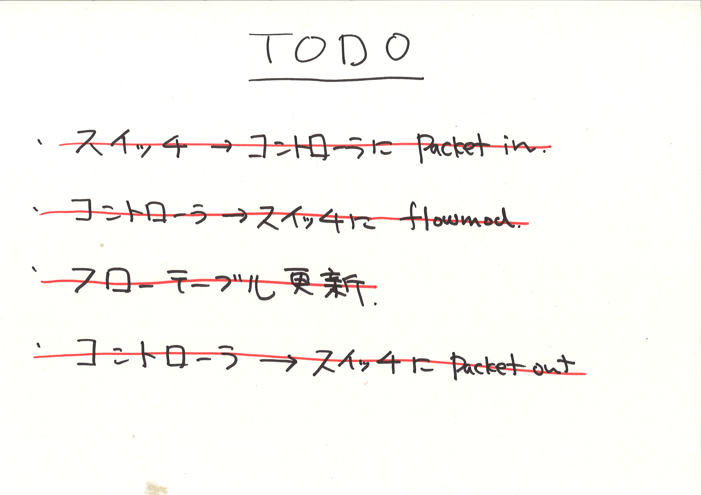

Trema チュートリアル
高宮 安仁
@yasuhito
2011 年 6 月 9 日

今日のゴール
"リピータハブを作りながら Trema フレームワークをまなぶ"
- Trema での開発の進めかた
- テストやデバッグの方法
- アーキテクチャとデザイン

Why Trema?
- OpenFlow の開発は環境のセットアップが煩雑
- 登場人物が多い (たくさんのスイッチ、ホスト、リンク)
- それぞれがステートを持ち、
- それらの間で複雑な通信が起こる分散プログラミング
- → フレームワーク無しでは開発が大変
Trema フレームワーク

Network エミュレーション
- 仮想実行環境を開発マシンの一台の上に構築可能
- 仮想スイッチ: Open vSwitch
- 仮想ホスト: phost (pseudo host)
- 仮想リンク: vlink (ip command)
- すべてを Ruby オブジェクトでラップし、スクリプトから制御
Network DSL
vswitch("switch1") { datapath_id "0x1" }
vswitch("switch2") { datapath_id "0x2" }
vswitch("switch3") { datapath_id "0x3" }
vswitch("switch4") { datapath_id "0x4" }
vhost("host1")
vhost("host2")
vhost("host3")
vhost("host4")
link "switch1", "host1"
link "switch2", "host2"
link "switch3", "host3"
link "switch4", "host4"
link "switch1", "switch2"
link "switch2", "switch3"
link "switch3", "switch4"テストスクリプト (Ruby only)
- コントローラのテストを記述
- テスト用ネットワーク環境の setup/teardown
- スイッチやホストのアサーションとエクスペクテーション
テストの例
# テスト例: MyController コントローラのユニットテスト
network { # エミュレーション環境のセットアップ
vswitch("switch") { datapath_id "0xabc" }
vhost("host1")
vhost("host2")
link "switch", "host1"
link "switch", "host2"
}.run(MyController) { # テストの実行
# エクスペクテーション
controller.should_receive(:packet_in)
# テストパケットの送信
send_packets "host1", "host2"
}特徴のまとめ
- エミュレータとテストフレームワークの統合により、
- "普通" のユニットテスト技法
- (スタブ、モック、エクスペクテーション etc.)
- を分散プログラミング (OpenFlow) に適用できる
「さっそく Trema で何か作ってみよう」
セットアップ
$ git clone git://github.com/trema/trema
$ ./trema/build.rb
(There is no Step Three!!)リピータハブのデザイン

分析
- 動作テストにはスイッチ 1 台と最低ホスト 3 台が必要
→ どうやって、テスト環境を構築する？
リピータハブのような単純な機能でも、シーケンスはわりと複雑
- → どうやって、それぞれの矢印をテストする？
Trema フレームワーク
- ネットワーク DSL
- 開発マシン上にエミュレーション環境を作れる
この上で開発した物はそのまま実環境へもデプロイ可能
テストフレームワーク
シーケンスの矢印が正しく動いているかユニットテストとして記述
Trema Ruby ライブラリ
- DSL やテスト、コントローラをシームレスに簡潔に記述
へえ。。。
オレもそろそろ 34 だし
Trema とやらをはじめてみるか。。。
イテレーション #1
"コントローラクラスを作る"
Trema 最初の一歩
# テスト用ヘルパーライブラリの読み込み
require File.join(File.dirname(__FILE__), "spec_helper")
describe RepeaterHub do
# ここにリピータハブのスペックを書いていく
# そのままテストコードとして実行される
end- Ruby のテストフレームワーク RSpec でテストを書く
Test First!
$ rspec -fs -c spec/repeater-hub_spec.rb
/home/yasuhito/play/trema/spec/repeater-hub_spec.rb:4: uninitialized constant RepeaterHub (NameError)
from /var/lib/gems/1.8/gems/rspec-core-2.6.3/lib/rspec/core/configuration.rb:419:in `load'
from /var/lib/gems/1.8/gems/rspec-core-2.6.3/lib/rspec/core/configuration.rb:419:in `load_spec_files'
from /var/lib/gems/1.8/gems/rspec-core-2.6.3/lib/rspec/core/configuration.rb:419:in `map'
from /var/lib/gems/1.8/gems/rspec-core-2.6.3/lib/rspec/core/configuration.rb:419:in `load_spec_files'
from /var/lib/gems/1.8/gems/rspec-core-2.6.3/lib/rspec/core/command_line.rb:18:in `run'
...
=> FAIL修正
require File.join( File.dirname( __FILE__ ), "spec_helper" )
# 空のクラス定義を追加
class RepeaterHub
end
describe RepeaterHub do
endふたたびテスト
$ rspec -fs -c spec/repeater-hub_spec.rb
No examples found.
Finished in 0.00003 seconds
0 examples, 0 failuresWhy Test First?
- OpenFlow は動作シーケンスが複雑
- 構成要素 (スイッチ、ホスト、コントローラ) も多い
- どこで何が起こっているかわかりづらい
- → そこで、ステップごとの動作テストが重要
- → Trema はこのためのテストフレームワークを提供
イテレーション #2
"すべてのポートにパケットを送る"
このイテレーションの目標
あるポートに届いたパケットが他のすべてのポートに送られる
テストに翻訳すると、
describe RepeaterHub do
# それ(RepeaterHub)は届いたパケットを他のすべてのポートへfloodingする
it "should flood incoming packets to every other port" do
# 中身はまだ空
end
endテスト
$ rspec -fs -c spec/repeater-hub_spec.rb
RepeaterHub
should flood incoming packets to every other port
Finished in 0.00028 seconds
1 example, 0 failuresテストの詳細化
"あるポートに届いたパケットが他のすべてのポートにも届く" とは:
スイッチ 1 台、ホスト 3 台があったとき (Given)、
- ホスト 1 が ホスト 2 にパケットを送ると (When)、
- ホスト 2 と ホスト 3 にパケットが届く (Then)
Given
describe RepeaterHub do
it "should flood incoming packets to every other port" do
network {
# スイッチ 1 台
vswitch("switch") { dpid "0xabc" }
# ホスト 3 台
vhost("host1") { promisc "on" }
vhost("host2") { promisc "on" }
vhost("host3") { promisc "on" }
# ホストをスイッチにつなぐ
link "switch", "host1"
link "switch", "host2"
link "switch", "host3"
}
end
endネットワーク DSL
# エミュレーション環境 {...} を作る
network {
# 仮想スイッチ
vswitch("名前") { オプション }
# 仮想ホスト
vhost("名前") { オプション }
# 仮想リンク
link "ピア#1", "ピア#2"
}テスト
$ rspec -fs -c spec/repeater-hub_spec.rb
RepeaterHub
should flood incoming packets to every other port
Finished in 0.00244 seconds
1 example, 0 failuresGiven, When
describe RepeaterHub do
it "should flood incoming packets to every other port" do
network {
vswitch("switch") { dpid "0xabc" }
vhost("host1") { promisc "on" }
vhost("host2") { promisc "on" }
vhost("host3") { promisc "on" }
link "switch", "host1"
link "switch", "host2"
link "switch", "host3"
}.run(RepeaterHub) { # RepeaterHub を動かす
# host1 から host2 にパケットを送る
send_packets "host1", "host2"
}
end
endネットワーク DSL
# エミュレーション環境上でコントローラ (ControllerClass) を起動し
# テストコードを実行
network {
...
}.run(ControllerClass) {
# テストコード
# テストコード
# テストコード
}テスト
$ rspec -fs -c spec/repeater-hub_spec.rb
RepeaterHub
should flood incoming packets to every other port (FAILED - 1)
Failures:
1) RepeaterHub should flood incoming packets to every other port
Failure/Error: network {
RuntimeError:
RepeaterHub is not a subclass of Trema::Controller
# ./spec/repeater-hub_spec.rb:11
Finished in 0.07034 seconds
1 example, 1 failure修正
# Trema::Controller クラスを継承
class RepeaterHub < Trema::Controller
end
describe RepeaterHub do
it "should flood incoming packets to every other port" do
network {
vswitch("switch") { dpid "0xabc" }
vhost("host1") { promisc "on" }
vhost("host2") { promisc "on" }
vhost("host3") { promisc "on" }
link "switch", "host1"
link "switch", "host2"
link "switch", "host3"
}.run(RepeaterHub) {
send_packets "host1", "host2"
}
end
endGiven, When, Then
describe RepeaterHub do
it "should flood incoming packets to every other port" do
network {
vswitch("switch") { dpid "0xabc" }
vhost("host1") { promisc "on" }
vhost("host2") { promisc "on" }
vhost("host3") { promisc "on" }
link "switch", "host1"
link "switch", "host2"
link "switch", "host3"
}.run(RepeaterHub) {
send_packets "host1", "host2"
# host2 と host3 がパケットを 1 つずつ受け取る
vhost("host2").stats(:rx).should have(1).packets
vhost("host3").stats(:rx).should have(1).packets
}
end
endFAIL!
$ rspec -fs -c spec/repeater-hub_spec.rb
RepeaterHub
should flood incoming packets to every other port (FAILED - 1)
Failures:
1) RepeaterHub should flood incoming packets to every other port
Failure/Error: vhost("host2").stats(:rx).should have( 1 ).packets
expected 1 packets, got 0
# ./spec/repeater-hub_spec.rb:24
Finished in 4.18 seconds
1 example, 1 failure計画の修正
- ...詰まった
- 次どうすればいいかわからない
- → やっぱりステップに分けて順に実装しよう
- → とりあえずこのテストは pending にする
Pending
describe RepeaterHub do
it "should flood incoming packets to every other port" do
network {
vswitch("switch") { dpid "0xabc" }
vhost("host1") { promisc "on" }
vhost("host2") { promisc "on" }
vhost("host3") { promisc "on" }
link "switch", "host1"
link "switch", "host2"
link "switch", "host3"
}.run(RepeaterHub) {
send_packets "host1", "host2"
pending( "あとで実装する" )
vhost("host2").stats(:rx).should have(1).packets
vhost("host3").stats(:rx).should have(1).packets
}
end
endあとまわし
$ rspec -fs -c spec/repeater-hub_spec.rb
RepeaterHub
should flood incoming packets to every other port (PENDING: あとで実装する)
Pending:
RepeaterHub should flood incoming packets to every other port
# あとで実装する
# ./spec/repeater-hub_spec.rb:10
Finished in 3.99 seconds
1 example, 0 failures, 1 pending
イテレーション #3
"Packet-in"

テストの整理
- スイッチ 1 台、ホスト 3 台があったとき (Given)、
- ホスト 1 が ホスト 2 にパケットを送ると (When)、
- コントローラにスイッチからの packet_in が届く (Then)
Expectation
describe RepeaterHub do
it "should flood incoming packets to every other port" do
network {
vswitch("switch") { dpid "0xabc" }
vhost("host1") { promisc "on" }
vhost("host2") { promisc "on" }
vhost("host3") { promisc "on" }
link "switch", "host1"
link "switch", "host2"
link "switch", "host3"
}.run(RepeaterHub) {
# スイッチ 0xabc から packet_in メッセージが一度だけ届くはず
controller("RepeaterHub").should_receive(:packet_in).with do |m|
m.datapath_id.should == 0xabc
end
send_packets "host1", "host2"
}
end
end
# => SUCCESSDon't Repeat Yourself
describe RepeaterHub do
around do |example| # 共通処理をここに書く
network {
...
}.run(RepeaterHub) {
example.run # テストの実行
}
end
context "when host1 sends one packet to host2" do
it "should #packet_in" do
controller("RepeaterHub").should_receive(:packet_in).with do |m|
m.datapath_id.should == 0xabc
end
send_packets "host1", "host2"
end
it "should flood incoming packets to every other port" do
send_packets "host1", "host2"
pending( "あとで実装する" )
vhost("host2").stats(:rx).should have(1).packets
vhost("host3").stats(:rx).should have(1).packets
end
end
# => SUCCESS

イテレーション #4
"Flow-mod"

「コントローラは flow-mod を送る」 はず?
it "should #send_flow_mod_add" do
controller("RepeaterHub").should_receive(:send_flow_mod_add).with do |dpid|
dpid.should == 0xabc
end
send_packets "host1", "host2"
end
# => FAIL!flow-mod を打つ
class RepeaterHub < Trema::Controller
def packet_in message
send_flow_mod_add message.datapath_id
end
end
# => SUCCESSフローエントリ数を確認
describe "switch" do
it "should have one flow entry" do
send_packets "host1", "host2"
switch("switch").should have(1).flows
end
end
# => SUCCESSフローエントリの中身を確認
describe "switch" do
it "should have one flow entry" do
send_packets "host1", "host2"
switch("switch").should have(1).flows
switch("switch").flows.first.actions.should == "FLOOD"
end
end
# => FAIL!ちゃんと flow_mod を打つ
def packet_in message
send_flow_mod_add(
message.datapath_id,
# マッチ、バッファ ID、アクションを指定
:match => Match.from(message),
:buffer_id => message.buffer_id,
:actions => ActionOutput.new(OFPP_FLOOD)
)
end
# => SUCCESS

イテレーション #5
"Packet-out"
宛先にパケットが届いてるか？
pending にしていたテストを復活
describe "host" do
it "should receive packets" do
send_packets "host1", "host2"
vhost("host2").stats(:rx).should have(1).packets
vhost("host3").stats(:rx).should have(1).packets
end
end
# => FAIL!パケットアウトしよう
class RepeaterHub < Trema::Controller
def packet_in message
send_flow_mod_add(
message.datapath_id,
:match => Match.from(message),
:buffer_id => message.buffer_id,
:actions => ActionOutput.new(OFPP_FLOOD)
)
# 追加
send_packet_out(
message.datapath_id,
message.buffer_id,
message.in_port,
ActionOutput.new(OFPP_FLOOD),
message.data
)
end
end
# => SUCCESS
できた! (?)
やりのこしたこと
- パケットがバッファされてるときの処理
- 二つ目以降のパケットで packet_in が起きない
- host2 や host3 からパケット打った場合
- パケット 100 発打って全部届くか
- フルバージョンはこちら [trema]/src/examples/repeater_hub/repeater-hub_spec.rb
まとめ
- Trema すごい便利
- 開発マシン一台で全部できる
- Ruby でいろいろできるし
- すごいすごーい
- Great!
- Great! Thanks!